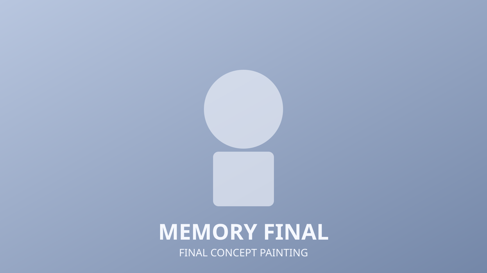

Memory
2D Concept
Narrative Scene
Lighting Study
Memory explores an emotional moment through layered foreground shapes, restrained palette choices, and soft contrast between character focus and background atmosphere.

Thumbnail Exploration
Composition options focused on rhythm between negative space and silhouette overlap, keeping the focal point readable even at small scale.
Final Concept Painting
Final pass refined value grouping and edge softness to support a nostalgic tone while preserving clear story direction.
